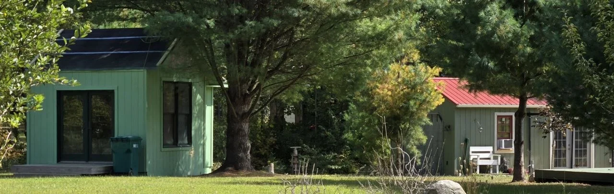

Gardening
Build a Simple Patio Garden Bed and Grow Something You’ll Actually Eat
DIY Patio Garden Bed
Read the story ↗Some projects start with a useful plan. Others start with a chipmunk, a cold winter, a berry bush, or a piece of wood we already have.

A woodpile the chipmunks loved became a playground.
Turn Old Lumber Into a Fun Backyard Squirrel Playground
The cabin story remembers Vanessa’s Christmas Sip & Build.
The Christmas Sip & BuildThe fence-picket birdhouse article keeps the build visual and personal.
Cedar Fence Picket Birdhouse Workshop
The feeder’s opening explicitly points back to the birdhouse style.
Build This Rustic Log Cabin Style Bird Feeder With Just One Cedar Fence Picket
One fan trellis turned out well enough that a second one followed for the blackberry bush.
We Made This 1 Cedar Fence Picket Into a Trellis for Our Raspberry Bush
The cabin chapter picks up the raspberry and blackberry supports at installation time.
From the workshop to the berry patch
The little storage building took years of work, a roof, siding, and a paint color that did not look like the swatch. That part belongs here, too.
The shed that kept fighting back
A few useful places to start with the thing you’re thinking about trying next.
DIY Patio Garden Bed
Read the story ↗
A fun cedar fence picket project with a seed tray, a little water bowl shelf, and a simple rain-catching roof that helps direct drips where wildlife can use them.
Read the story ↗
A simple in-bed worm composting tube gives your raised bed a place to take in kitchen scraps, build worm activity, and slowly feed the soil over time without making gardening more complicated.
Read the story ↗